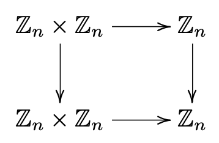

Section 1.4 Equivalence Relations
Subsection 1.4.1 Definitions
A relation on a set \(X\) is a subset of \(X\times X\text{.}\) Given a relation \(R\subseteq X\times X\text{,}\) we write \(x\sim_R y\text{,}\) or just \(x\sim y\) if \(R\) is understood by context, to denote that \((x,y)\in R\text{.}\) A relation is reflexive if \(x\sim x\) for every \(x\) in \(X\text{.}\) A relation is symmetric if \(x\sim y\) implies \(y\sim x\text{.}\) A relation is transitive if \(x\sim y\) and \(y\sim z \) together imply that \(x\sim z\text{.}\) A relation is called an equivalence relation if it is reflexive, symmetric, and transitive. Given an equivalence relation on \(X\) and an element \(x\in X\text{,}\) we write \([x]\) to denote the set
called the equivalence class of the element \(x\text{.}\) The set of equivalence classes is denoted \(X/\!\!\sim\text{,}\) that is,
A partition of a set \(X\) is a collection of nonempty disjoint sets whose union is \(X\text{.}\)
Subsection 1.4.2 Facts
Let \(X\) be a set. Equivalence relations on \(X\) and partitions of \(X\) are in one-to-one correspondence, as follows. Given an equivalence relation \(\sim\) on \(X\text{,}\) the collection is a partition of \(X\text{.}\) Conversely, given a partition \({\mathcal P}\) of \(X\text{,}\) the relation \(\sim_{\mathcal P}\) defined by is an equivalence relation. These correspondences are inverse to one another. That is, \(\sim = \sim_{(X/\sim)}\) and \(X/(\sim_{\mathcal P}) = {\mathcal P}\text{.}\)
Fact 1.4.1. Equivalence relations and partitions.
Let \(\sim\) be an equivalence relation on a set \(X\text{,}\) let \(\pi\colon X\to X/\!\!\sim\) denote the map given by \(x\to [x]\text{,}\) and let \(f\colon X\to Y\) be a function. There exists a map \(\overline{f}\colon X/\!\!\sim
\to Y\) such that \((\overline{f}\circ \pi)(x)=f(x)\) for all \(x\in X\) if and only if \(f\) is constant on equivalence classes (that is, if and only if \([x\sim
y\Rightarrow f(x)=f(y)]\text{.}\))
Fact 1.4.2. Construction of functions on sets of equivalence classes.
Note on terminology: when a function \(f\) is constant on equivalence classes, we say that the associated function \(\overline{f}\) is well-defined.
Given a function \(f\colon X\to
Y\text{,}\) there is a natural equivalence relation \(\sim_f\) on \(X\) given by \(x\sim_f y\) if and only if \(f(x)=f(y)\text{.}\) The corresponding set of equivalence classes is \(X/\!\!\sim_f \; = \{f^{-1}(y)\colon y\in
f(X)\}\text{.}\) Furthermore, the function \(X/\!\!\sim_f \; \to f(X)\) given by \([x]\to f(x)\) is a one-to-one correspondence.
Fact 1.4.3. Construction of equivalence relations and partitions from functions.
Subsection 1.4.3 Important example: the integers modulo an integer \(n\)
Let \(n\) be a positive integer. Let \(\sim_n\) be the relation on the integers \(\Z\) given by
(recall that the symbols "\(a|b\)" for integers \(a,b\text{,}\) pronounced "\(a\) divides \(b\)", means \(b=ka\) for some integer \(k\)). It is easy to show that \(\sim_n\) is an equivalence relation, and that the equivalence classes are precisely the set
Checkpoint 1.4.4.
- Verify that the relation \(\sim_n\) is indeed an equivalence relation.
- Verify that the equivalence classes of the equivalence relation \(\sim_n\) are indeed \(\{[0],[1],[2],\ldots,[n-1]\}\text{.}\) Hint: Use the division algorithm, which says that for any \(x\in \Z\text{,}\) there are unique integers \(q,r\text{,}\) with \(r\) in the range \(0\leq r\leq n-1\text{,}\) such that \(x=qn+r\text{.}\)
This set of equivalence classes is fundamental and pervasive in mathematics. Instead of writing \(Z/\!\!\sim_n\text{,}\) the universally used notation is \(\Z_n\text{.}\) Instead of writing \(x\sim_n y\text{,}\) the universally used notation is \(x=y\pmod{n}\) (or sometimes \(x\equiv y\pmod{n}\)).
Subsection 1.4.4 A useful tool: commutative diagrams
A directed graph (or digraph ) is a set \(V\) of vertices and a set \(E\subset V\times V\) of directed edges. We draw pictures of digraphs by drawing an arrow pointing from a vertex \(v\) to a vertex \(w\) whenever \((v,w)\in E\text{.}\) See Figure 1.4.5.
A path in a directed graph is a sequence of vertices \(v_0,v_2,\ldots,v_{n}\) such that \((v_{i-1},v_i)\in E\) for \(1\leq i\leq n\text{.}\) The vertex \(v_0\) is called the initial vertex and \(v_n\) is called the final vertex of the path \(v_0,v_2,\ldots,v_{n}\text{.}\)
A commutative diagram is a directed graph with two properties.
- Vertices are labeled by sets and directed edges are labeled by functions between those sets. That is, the directed edge \(f=(X,Y)\) denotes a function \(f\colon X\to Y\text{.}\)
- Whenever there are two paths from an initial vertex \(X\) to a final vertex \(Y\text{,}\) the composition of functions along one path is equal to the composition of functions along the other path. That is, if \(X_0,X_1,\ldots,X_n\) is a path with edges \(f_i\colon X_{i-1}\to X_{i}\) for \(1\leq i\leq n\) and \(X_0=Y_0,Y_1,Y_2,\ldots,Y_m=X_n\) is a path with edges \(g_i\colon Y_{i-1}\to Y_{i}\) for \(1\leq i\leq
m\text{,}\) then\begin{equation*} f_n\circ f_{n-1}\circ\cdots\circ f_1=g_m\circ g_{m-1}\circ\cdots\circ g_1. \end{equation*}
Figure 1.4.6 shows a commutative diagram that goes with Fact 1.4.2. Figure 1.4.7 shows a commutative diagram that illustrates the definition of conjugate transformations.
Exercises 1.4.5 Exercises
The integers modulo \(n\text{.}\)
1.
Let \(\omega\) be the complex number \(\omega=e^{2\pi i/n}\text{,}\) and let \(f\colon \Z\to \C\) be given by \(m\to \omega^m\text{.}\) Show that the equivalence relation \(\sim_f\) given by Fact 1.4.3 is the same as \(\sim_n\text{.}\)
2.
Show that the operation of addition on \(\Z_n\) given by
is well-defined. This means showing that if \([x]=[x']\) and \([y]=[y']\text{,}\) then \([x+y]=[x'+y']\text{.}\)
3.
Show that the operation of multiplication on \(\Z_n\) given by
is well-defined.
4. Alternative construction of \(\Z_n\).
Another standard definition of the set \(\Z_n\text{,}\) together with its operations of addition and multiplication, is the following. Given an integer \(a\text{,}\) we write \(a \MOD n\) to denote the remainder obtained when dividing \(a\) by \(n\) (the integer \(a \MOD n\) is the same as the integer \(r\) in the statement of the division algorithm given in Checkpoint 1.4.4). Now define \(\Z_n\) to be the set
define the addition operation \(+_n\) on \(\Z_n\) by
and define the multiplication operation \(\cdot_n\) on \(\Z_n\) by
Show that this version of \(\Z_n\) is equivalent to the version developed in Exercise 1.4.5.2 and Exercise 1.4.5.3.
5. Commutative diagram examples.
- Draw a commutative diagram that illustrates the results of Exercise 1.3.3.5.
- The distributive law for \(\Z_n\) says that\begin{equation*} [x]\left([y]+[z]\right) = [x][y] + [x][z] \end{equation*}for all \([x],[y],[z]\in \Z_n\text{.}\) Label the maps in the commutative diagram below to express the distributive law.
Figure 1.4.8.
6.
Prove Fact 1.4.1.
7.
Prove Fact 1.4.2.
8.
Prove Fact 1.4.3.